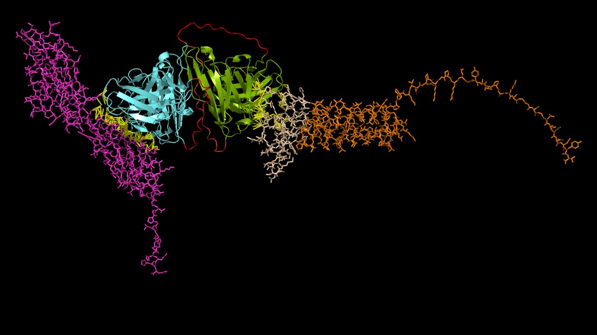
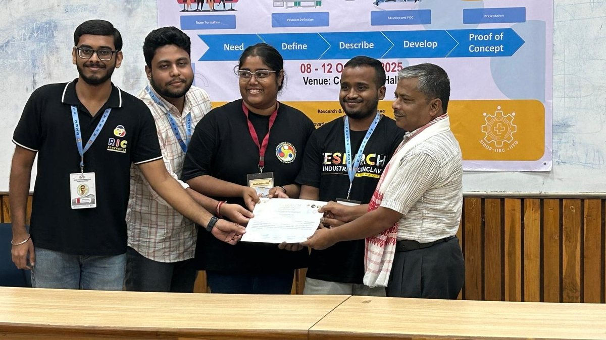

Computational biology · Cell therapy · Pharmacy
Finding the targets that immune-cell therapies can safely hit.
I am a biomedical engineer and registered pharmacist. My M.Tech research built an end-to-end in silico pipeline for dual-target CAR-NK cell design, from TCGA transcriptomics through normal-tissue safety filtering to AlphaFold and HADDOCK structural validation.
Where to start
Four ways into the work

Research
The M.Tech thesis on dual CAR-NK design for breast cancer, the molecular biology work at AIIMS New Delhi, and a pharmacogenomics study of adverse drug reactions.
Read the research →
Projects
Reproducible transcriptomics pipelines, a low-cost maternal-health monitor built with a four-person team, and a quantum machine learning experiment. Source on GitHub.
See the projects →About
Education, teaching, the toolkit I actually use, awards, and the societies and conclaves I have helped run.
More about me →Design & media
Six years of posters, campaigns, brand work and event photography for university societies, a national conclave and a pharmacy brand.
Open the gallery →In short
What I am looking for
PhD positions and research roles in computational biology, cancer immunotherapy and target discovery — anywhere that a pharmacist's view of what can actually reach a patient is useful alongside the data. I work mostly in R and Python, on transcriptomics and structural modelling, and I care about pipelines other people can rerun.